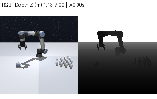

中文
English
完整选型 / Full review
中文文档
English report
Numerical audit

Official project / videos
Released Bowling data
Task / official video
Family
Full release train / val
Depth acceptance
中文完整报告 / 命令
English report / commands
Inventory JSON
44 项深度目录